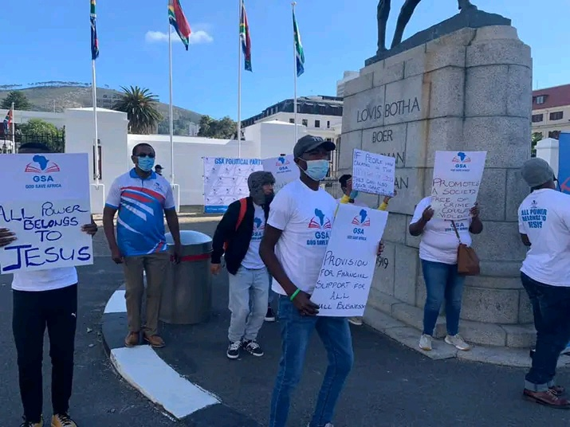

God Save Africa and the World (GSAW) is calling on all South Africans who believe in Godly governance to volunteer their time, skills, and energy. You don't need to be a member — just a willing heart and a desire to see South Africa transformed.

GSAW members and volunteers marching in the Eastern Cape, calling for provision of financial support for all small businesses and Godly governance.
Why Volunteer?
GSAW is a movement of the people, for the people, under God. Our volunteers are the heartbeat of this party — from door-to-door campaigns to voter registration drives, from community outreach to event coordination. Every pair of hands makes a difference.
As our Constitution states: "We believe in unity and diversity of all people." Whether you're a student, professional, retiree, or job-seeker — there's a place for you.
Young GSAW volunteers proudly representing the party at Parliament. The youth are the future of Godly governance!
How You Can Help
- Door-to-door campaigns — Spread the GSAW message in your community
- Event support — Help organise rallies, gospel events, and prayer meetings
- Voter registration drives — Encourage and assist people to register
- Media & social content — Photography, video, social media posts
- Transport & logistics — Help move people and materials
- Admin & data entry — Support the party's operations
- Prayer teams — Spiritual covering for the movement
GSAW supporters standing together at the Eastern Cape march — "All Power Belongs to Jesus" and "Promote a Society Free of Crime and Gender Violence."
Sign Up Today
Registering as a volunteer takes less than 2 minutes. Fill out the form and a GSAW coordinator in your province will reach out to match you with activities in your area.
Ready to Make a Difference?
Join hundreds of South Africans already volunteering with GSAW across all 9 provinces.
Sign Up to Volunteer